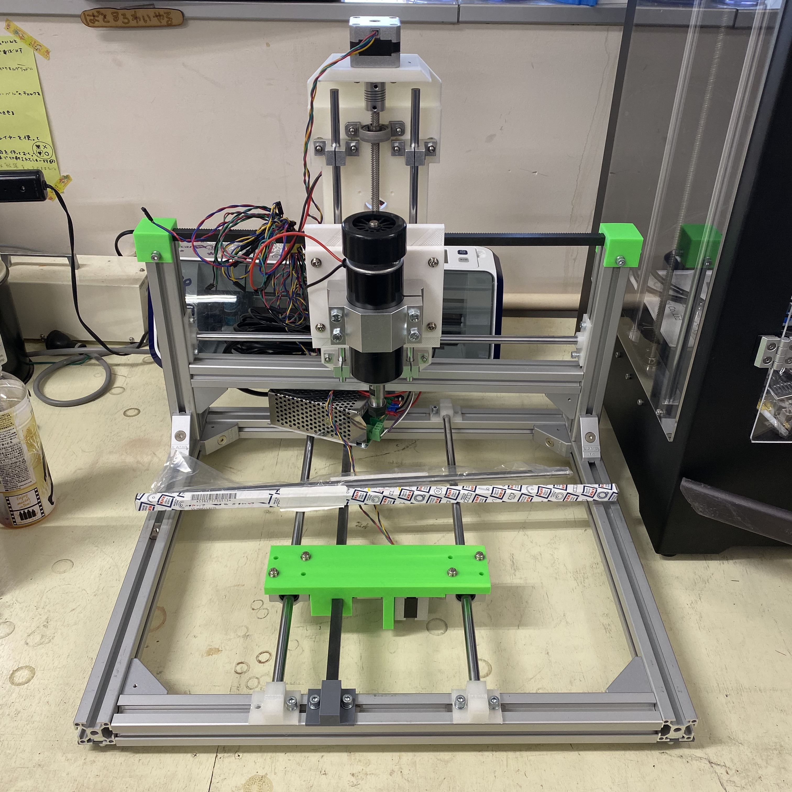

楽器ｘマスカスタマイゼーションのハード面を作っていくということで、
夏合宿中に先生と協力して作っていたCNCの続きを作っていきます。
夏合宿ではZ軸まで製作しました。（夏合宿中の製作は後でまとめます。）
Z軸まで作り上げたCNCでしたがが結局Z軸が重くモーターのパワーが足りず、
X軸を思いどうりに動かすことができませんでした…。
そのためより強いモーターと交換し稼働させてみたところ、電圧が違っていたため動きませんでした…。
ここまでが夏合宿です。
そこで電圧を調整し再度試してみたところ、無事動かすことができました！
ですがまだ少し重そうなご様子…。
これではきっと実際に切削しようとしたときに負荷に耐え切れず止まってしまいます。
切削するときに相当な負荷がかかることを考慮すると、もっと強度とパワーを上げなければなりません。
そのため二本の柱で固定していたX軸とZ軸を、四隅の四本の柱で固定することにします。
さらに今までのX軸の反対側にもX軸方向のモーターを設置し、負荷に耐えられるようパワーを強くします。

パーツを準備。
こちらがアルミのアルミの柱


３Dプリントしていきます。

これらのパーツを組み立てていきます。
まずアルミの柱で骨組みを作っていきます。

その後X軸の取り付け。


こんな感じで仕上がりました。

ここにモーターを取り付け反対側のX軸と連動させればより強力になります。
ですが真ん中の大きなパーツをABSで出してしまい反ってしまったため、
もう一度作り直します。
それとこの二つのX軸をつなぎ合わせる方法を検討中です。
－－－－－－－－－－－－－－－－－－－－－－－－－－－－－－－－－－－－－－－－－－－－－－－－－
ABSで出力してしまった真ん中のパーツをL-DEVOで再び出力します。

いざ出力！！


あれ……なんだか中がスカスカです。
失敗してしまいました。
まるでウエハースのよう…食べてみたらいい食感がしそうです。
ですがふわふわなのでこれはこれで新しい素材として何かに使えそうな予感…！
気を取り直して何が原因なのかを探っていきます。
データのミスや密度の違い、ノズルのつまりなどを確認していきますがどこを変えてもスカスカのまま…。
何が原因なんだと困り果てているときに、あれ？？
フィラメントこんなに太かったっけ？？
まさかここか？？
ということで太さを測り入力しなおします。
これで出力……。

無事綺麗に出力できました！！！
これを組み込んで…

モーターも設置します。


あとはX軸をつなぎ合わせる方法が決まりません。
結構強度が必要そうだし…。
期間限定で無料になってるジェネレーティブデザインでも使ってみるか…。